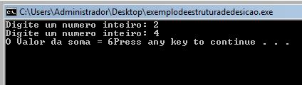
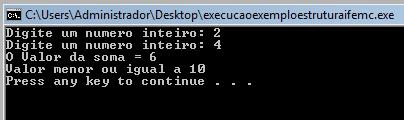

Estrutura de decisão if em Linguagem C
Uma estrutura de decisão examina uma ou mais condições e decide quais instruções serão executadas dependendo se a condição foi ou não foi.
O comando if é uma estrutura de decisão muito utilizada.
Em pseudocódigo teríamos algo assim:
Se (condição) então
Início
Instruções;
Fim;
Em linguagem C o código equivalente para essa estrutura de decisão é:
if (condição)
{
instrução ou instruções para condição verdadeira;
}
Exemplo de programa utilizando estrutura de decisão:
Elaborar um programa em linguagem C para somar dois números inteiros e mostrar o valor da soma na tela. Caso a soma dos números seja maior que 10 mostrar uma mensagem informativa na tela.
#include
#include
int main(void)
{
int A, B, Soma;
printf("Digite um numero inteiro: ");
scanf("%d", &A);
printf("Digite um numero inteiro: ");
scanf("%d", &B);
Soma = A + B;
printf ("O Valor da soma = %d", Soma);
if(Soma > 10)
{
printf("O valor da soma é maior que 10\n");
}
system ("PAUSE");
return(0);
}
Tela de execução

Observe que somente será escrito na tela “O valor da soma é maior que 10” SE a condição (Soma > 10) for verdadeira. Caso a condição seja falsa os comandos que estão dentro do if serão ignorados.
Estrutura de decisão if else
Agora vamos modificar o código do exemplo anterior com o intuito de enviar uma mensagem informando também quando a soma é menor ou igual a 10.
Para tanto, o pseudocódigo seria:
Se (Soma > 10) então
Escreva(“Valor maior que 10”);
Senão
Escreva(“Valor menor ou igual a 10”);
Sendo assim, vamos executar uma determinada instrução se a condição for satisfeita ou outra instrução quando a condição for falsa.
O senão simboliza a negação da condição, logo está ligado à instrução que será executada quando a condição for falsa.
Em linguagem C temos o código equivalente:
if(Soma > 10)
{
printf("O valor da soma é maior que 10\n);
}
else
{
printf("Valor menor ou igual a 10");
}
Observe que o senão em linguagem C é representado pelo comando else.
Veja o código completo na abaixo:
#include
#include
int main(void)
{
int A, B, Soma;
printf("Digite um numero inteiro: ");
scanf("%d", &A);
printf("Digite um numero inteiro: ");
scanf("%d", &B);
Soma = A + B;
printf("O Valor da soma = %d\n", Soma);
if(Soma > 10)
{
printf("O valor da soma e maior que 10\n");
}
else
{
printf("Valor menor ou igual a 10\n");
}
system("PAUSE");
return(0);
}
Tela de execução
